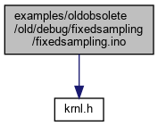
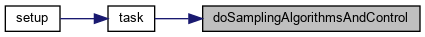
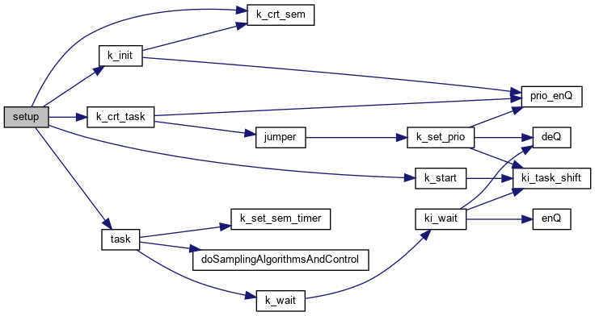
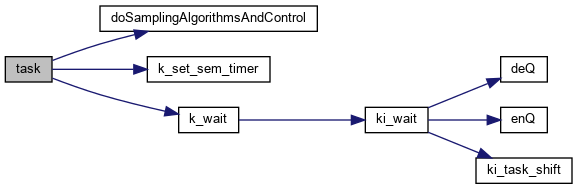

#include <krnl.h>
Include dependency graph for fixedsampling.ino:

Go to the source code of this file.
Macros | |
| #define | STK 100 |
Functions | |
| void | doSamplingAlgorithmsAndControl () |
| void | task () |
| void | setup () |
| void | loop () |
Variables | |
| struct k_t * | pSem |
| struct k_t * | pTask |
| char | stak [STK] |
Macro Definition Documentation
◆ STK
| #define STK 100 |
Definition at line 5 of file fixedsampling.ino.
Function Documentation
◆ doSamplingAlgorithmsAndControl()
| void doSamplingAlgorithmsAndControl | ( | ) |
Definition at line 8 of file fixedsampling.ino.
Referenced by task().
Here is the caller graph for this function:

◆ loop()
| void loop | ( | ) |
Definition at line 45 of file fixedsampling.ino.
◆ setup()
| void setup | ( | ) |
Definition at line 34 of file fixedsampling.ino.
References k_crt_sem(), k_crt_task(), k_init(), k_start(), pSem, pTask, stak, STK, and task().
Here is the call graph for this function:

◆ task()
| void task | ( | ) |
Definition at line 23 of file fixedsampling.ino.
References doSamplingAlgorithmsAndControl(), k_set_sem_timer(), k_wait(), and pSem.
Referenced by setup().
Here is the call graph for this function:

Here is the caller graph for this function:

Variable Documentation
◆ pSem
| struct k_t* pSem |
Definition at line 3 of file fixedsampling.ino.
◆ pTask
| struct k_t * pTask |
Definition at line 3 of file fixedsampling.ino.
Referenced by setup().
◆ stak
| char stak[STK] |
Definition at line 6 of file fixedsampling.ino.
Referenced by setup().